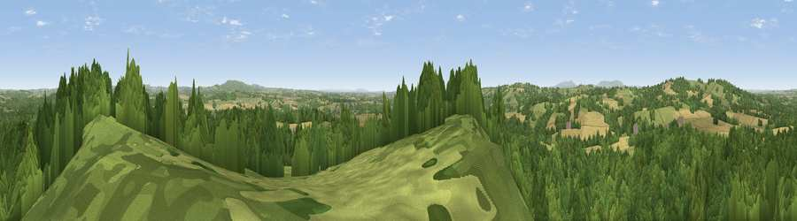

Kinver Edge
#12234 in England · top 18% of its area beats it · near KinverThe view, rendered

A 360° render of this exact spot computed from the terrain model, tree cover and land cover — summer colours, afternoon light, calibrated against photographs of famous viewpoints. Real trees, hedges and buildings will differ in detail.
The panorama
Grey silhouette: terrain skyline in each direction (720 bearings, Earth curvature and refraction included). Dashed green: skyline with trees (+15 m) and buildings (+8 m) as obstacles. Blue strip: how far the ground is visible on each bearing.
Where the view opens
Wedge length = distance to the farthest visible ground on that bearing (vegetation-aware). Rings at 10, 25 and 50 km.
What fills the view
68% woodland · 18% grassland · 12% cropland · 2% built-up
Angular shares of the visible panorama (visual magnitude), not map area. Landscape diversity 0.39 (0–1 Shannon).
Key numbers
More beautiful places nearby
The staircase of upgrades: each row has a higher view potential than everything closer. Driving times are estimates from straight-line distance, calibrated against real road routing — check an actual route before setting out.
| Place | Direction | Drive | Score |
|---|---|---|---|
| Viewpoint near Enville | NW · 3 km | ~7 min | 68.7 |
| Viewpoint near Enville | NW · 3 km | ~8 min | 73.1 |
| Viewpoint near Clent | ESE · 10 km | ~20 min | 74.3 |
| Knowle Hill | W · 14 km | ~25 min | 75.5 |
| Viewpoint near Abberley | SSW · 17 km | ~30 min | 77.5 |
| Abberley Hill | SSW · 18 km | ~31 min | 80.4 |
| Woodbury Hill | SSW · 20 km | ~34 min | 81.6 |
| Viewpoint near Great Witley | SSW · 20 km | ~34 min | 83.4 |
52.44493, -2.24749 · source: osm peak · position refined by local search. Computed location — check access rights before visiting.